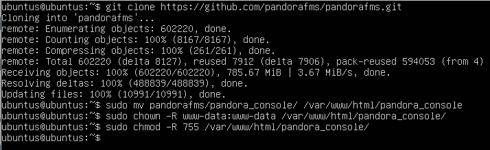
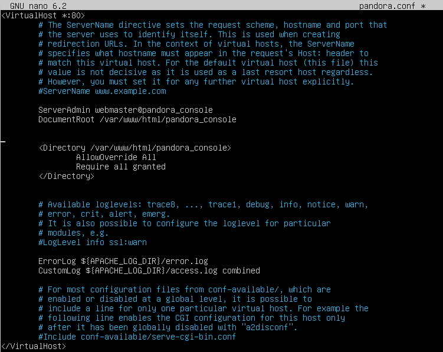

Configuración del Ubuntu Server
Configuración del netplan
sudo nano /etc/netplan/50-cloud-init.yaml
sudo netplan apply
Configuración de Pandora FMS
- Instalación de depenencias:
Tendremos que instalar las siguientes dependencias:
- apache2
- mariaDB
- php
sudo apt install apache2 mariadb-server mariadb-client php
- Configuracion de seguridad de MySQL
Para añadir seguridad a las base de datos, al acceso a mysql, etc. Vamos a ejecutar el siguiente comando donde podremos añadir una contraseña al usuario root y nos preguntará si hace una serie de cosas como quitar los usuarios anónimos, quitar el acceso a las base de datos de prueba y actualizar las tablas.
sudo mysql_secure_installation
Remove anonymous users? → y (yes)
Disallow root login remotely? → n (no)
Remove test database and access to it? → y (yes)
Reload privilege tables now? → y (yes)
Nos preguntará también si queremos cambiar la contraseña de root@localhost, en mi caso yo le he puesto root. La podremos cambiar una vez entremos en mysql
- Configuración de mariaDB
Hay que tener en cuenta que vamos a acceder desde una máquina diferente al server,por lo que tenenmos que editar el archivo de configuración
Buscaremos la linea de bind-address y le pondremos 0.0.0.0
sudo nano /etc/mysql/mariadb.conf.d/50-server.cnf
bind-address: 0.0.0.0

Ahora entraremos en mysql y crearemos, si no existe, el usuario root y le daremos permisos para que pueda hacerlo todo.
sudo mysql
create user ‘root’@’%’ identified with mysql_native_password by ‘Root_pf1’;
grant all on *.* to 'root'@'%';
flush privileges;

- Creación de la base de datos y el usuario
Vamos a crear la base de datos y el usuario con el cuál accederemos desde el cliente
sudo mysql -u root -p
CREATE DATABASE pandora;
CREATE USER 'pandora'@'%' IDENTIFIED BY 'Pandora_fms1';
GRANT ALL PRIVILEGES ON pandora.* TO 'pandora'@'%';
FLUSH PRIVILEGES;
EXIT;

- Descarga e instalación de Pandora FMS
Clonaremos el repositorio de github de pandora y damos permisos a este
git clone https://github.com/pandorafms/pandorafms.git
sudo mv pandorafms/pandora_console /var/www/html/pandora_console
sudo chown -R www-data:www-data /var/www/html/pandora_console
sudo chmod -R 755 /var/www/html/pandora_console

- Configuración de Apache
Para ello creamos y editamos el archivo de configuración y lo habilitamos
sudo cp 000-default.conf pandora.conf
sudo nano pandora.conf
sudo a2ensite pandora.conf
sudo systemctl reload apache2
sudo systemctl restart apache2
sudo systemctl status apache2

- Finalizar instalacion en el navegador
Una vez hecha la instalación y configuración de apache, podremos acceder a través de un navegador buscando lo siguiente:
http://192.168.122.16/pandora_console
Teniendo en cuenta que la dirección 192.168.122.16 es la ip del servidor y pandora_console la carpeta que hemos movido a /var/www/html

Una vez dentro simplemente seguimos los pasos de la instalación, nos indicará si hay alguna dependencia que no esté instalada.

Y nos preguntará acerca de los datos de la base de datos.

Cuando encuentre la base de datos se creará
- Instalación y configuración del serrvidor de Pandora FMS